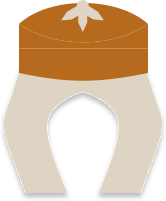

Perspective · Lit · Show2 unsaved · World Partition

HaybaClinic lobby blockout
Draft in progress · Saskartarad / L_Clinic
⌖ Current level◇ 4 selected actors▧ Clinic brief.pdf
You
H Hayba · Scene design
I mapped the lobby around a 1.8 m accessible path. Here is an editable first pass before I place anything.
◫Spatial planDraft v2
4 zones · 18 proxies · 3 constraints
Entry → waiting → reception, with a visible route to the clinic corridor.
Entry → waiting → reception, with a visible route to the clinic corridor.
Preview layout and relationsOpen world canvas ↗
Inspected level and 4 selected actors
Checked route width and reception sightline
Ready to preview 18 placements
Ask for a change, attach a reference, or describe the next step…
Draft ▾＋ Context▧ Image
● Editor connectedModel and safety settings